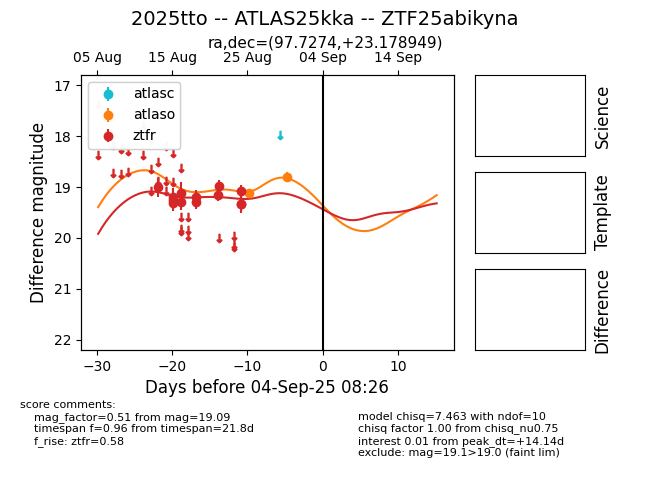

Target 2025tto at 2025-08-26 23:22, see:
FINK: fink-portal.org/ZTF25abikyna
Lasair: lasair-ztf.lsst.ac.uk/objects/ZTF25abikyna
ALeRCE: alerce.online/object/ZTF25abikyna
TNS: wis-tns.org/object/2025tto
YSE: ziggy.ucolick.org/yse/transient_detail/2025tto
alt names
ZTF25abikyna (ztf,fink)
2025tto (tns,yse)
ATLAS25kka (atlas)
coordinates:
equatorial (ra, dec) = (97.7274,+23.17895)
galactic (l, b) = (189.9769,+6.10160)
photometry
last atlaso=19.11, ztfr=19.09
1 atlaso, 13 ztfr detections
